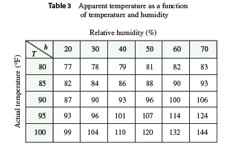

The temperature-humidity index \(I\) (or humidex, for short) is the perceived air temperature when the actual temperature is \(T\) and the relative humidity is \(h\), so we can write \(I = f(T, h)\). The following table of values of \(I\) is an excerpt from a table compiled by the National Oceanic & Atmospheric Administration.
